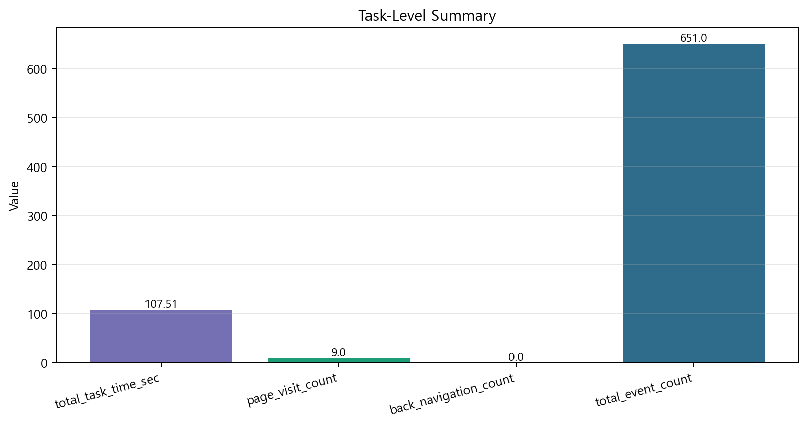
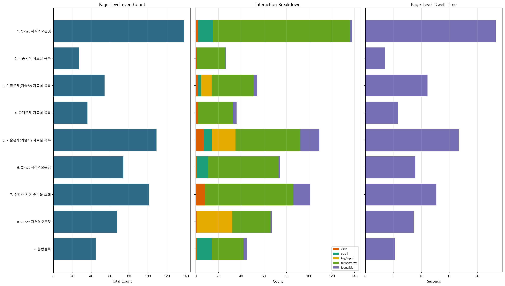
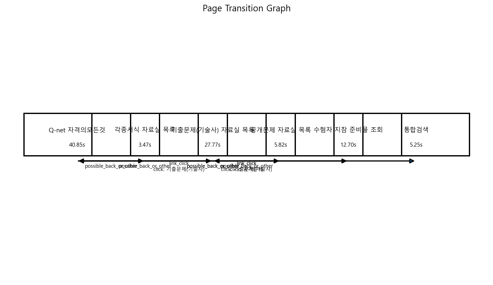
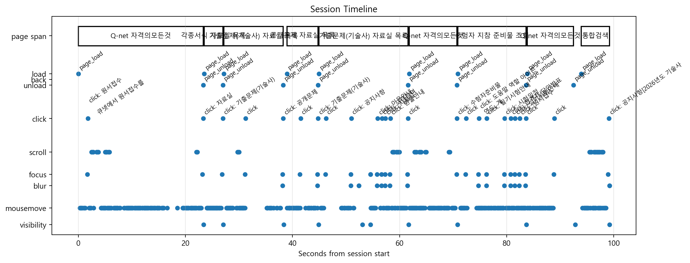

| Visit | Page | Entry Type | Start Time | End Time | Duration(s) | eventCount | Click | Scroll | KeyInput |
|---|---|---|---|---|---|---|---|---|---|
| 1 | Q-net 자격의모든것 | page_load | 26-03-26 13:21:02 | 26-03-26 13:21:25 | 23.32 | 138 | 2 | 13 | 0 |
| 2 | 각종서식 자료실 목록 | page_load | 26-03-26 13:21:26 | 26-03-26 13:21:29 | 3.47 | 27 | 1 | 0 | 0 |
| 3 | 기출문제(기술사) 자료실 목록 | page_load | 26-03-26 13:21:29 | 26-03-26 13:21:40 | 11.11 | 54 | 2 | 3 | 9 |
| 4 | 공개문제 자료실 목록 | page_load | 26-03-26 13:21:41 | 26-03-26 13:21:47 | 5.82 | 36 | 2 | 0 | 0 |
| 5 | 기출문제(기술사) 자료실 목록 | page_load | 26-03-26 13:21:47 | 26-03-26 13:22:04 | 16.66 | 109 | 7 | 7 | 21 |
| 6 | Q-net 자격의모든것 | page_load | 26-03-26 13:22:04 | 26-03-26 13:22:13 | 8.91 | 74 | 1 | 10 | 0 |
| 7 | 수험자 지참 준비물 조회 | page_load | 26-03-26 13:22:13 | 26-03-26 13:22:26 | 12.70 | 101 | 8 | 0 | 0 |
| 8 | Q-net 자격의모든것 | page_load | 26-03-26 13:22:26 | 26-03-26 13:22:35 | 8.62 | 67 | 1 | 0 | 31 |
| 9 | 통합검색 | page_load | 26-03-26 13:22:36 | 26-03-26 13:22:41 | 5.25 | 45 | 1 | 13 | 0 |

| Page | Start Time | End Time | Duration(s) |
|---|---|---|---|
| Q-net 자격의모든것 | 26-03-26 13:21:02 | 26-03-26 13:21:25 | 23.32 |
| 각종서식 자료실 목록 | 26-03-26 13:21:26 | 26-03-26 13:21:29 | 3.47 |
| 기출문제(기술사) 자료실 목록 | 26-03-26 13:21:29 | 26-03-26 13:21:40 | 11.11 |
| 공개문제 자료실 목록 | 26-03-26 13:21:41 | 26-03-26 13:21:47 | 5.82 |
| 기출문제(기술사) 자료실 목록 | 26-03-26 13:21:47 | 26-03-26 13:22:04 | 16.66 |
| Q-net 자격의모든것 | 26-03-26 13:22:04 | 26-03-26 13:22:13 | 8.91 |
| 수험자 지참 준비물 조회 | 26-03-26 13:22:13 | 26-03-26 13:22:26 | 12.70 |
| Q-net 자격의모든것 | 26-03-26 13:22:26 | 26-03-26 13:22:35 | 8.62 |
| 통합검색 | 26-03-26 13:22:36 | 26-03-26 13:22:41 | 5.25 |
| From | To | From Time | To Time | Type | Evidence |
|---|---|---|---|---|---|
| Q-net 자격의모든것 | 각종서식 자료실 목록 | 26-03-26 13:21:02 | 26-03-26 13:21:26 | possible_back_or_other | |
| 각종서식 자료실 목록 | 기출문제(기술사) 자료실 목록 | 26-03-26 13:21:26 | 26-03-26 13:21:29 | link_click | click: 기출문제(기술사) |
| 기출문제(기술사) 자료실 목록 | 공개문제 자료실 목록 | 26-03-26 13:21:29 | 26-03-26 13:21:41 | link_click | click: 공개문제 |
| 공개문제 자료실 목록 | 기출문제(기술사) 자료실 목록 | 26-03-26 13:21:41 | 26-03-26 13:21:47 | link_click | click: 기출문제(기술사) |
| 기출문제(기술사) 자료실 목록 | Q-net 자격의모든것 | 26-03-26 13:21:47 | 26-03-26 13:22:04 | possible_back_or_other | |
| Q-net 자격의모든것 | 수험자 지참 준비물 조회 | 26-03-26 13:22:04 | 26-03-26 13:22:13 | possible_back_or_other | |
| 수험자 지참 준비물 조회 | Q-net 자격의모든것 | 26-03-26 13:22:13 | 26-03-26 13:22:26 | possible_back_or_other | |
| Q-net 자격의모든것 | 통합검색 | 26-03-26 13:22:26 | 26-03-26 13:22:36 | possible_back_or_other |

